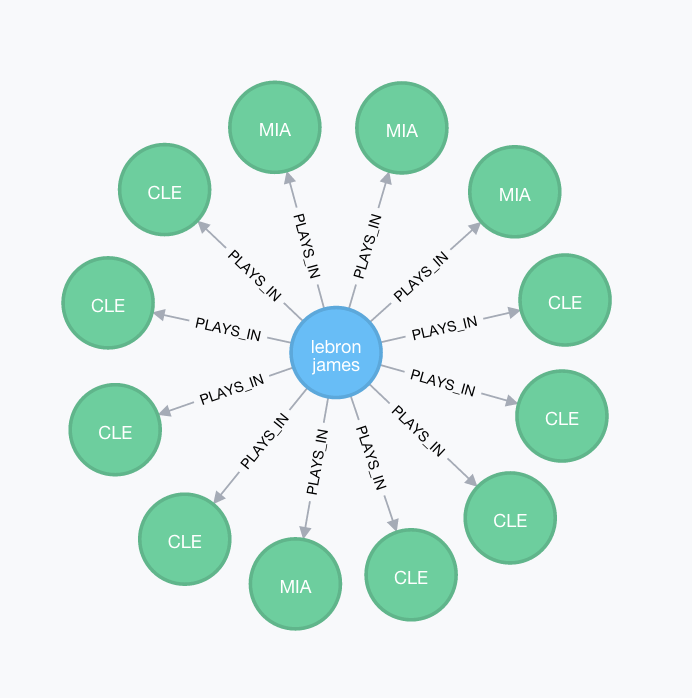
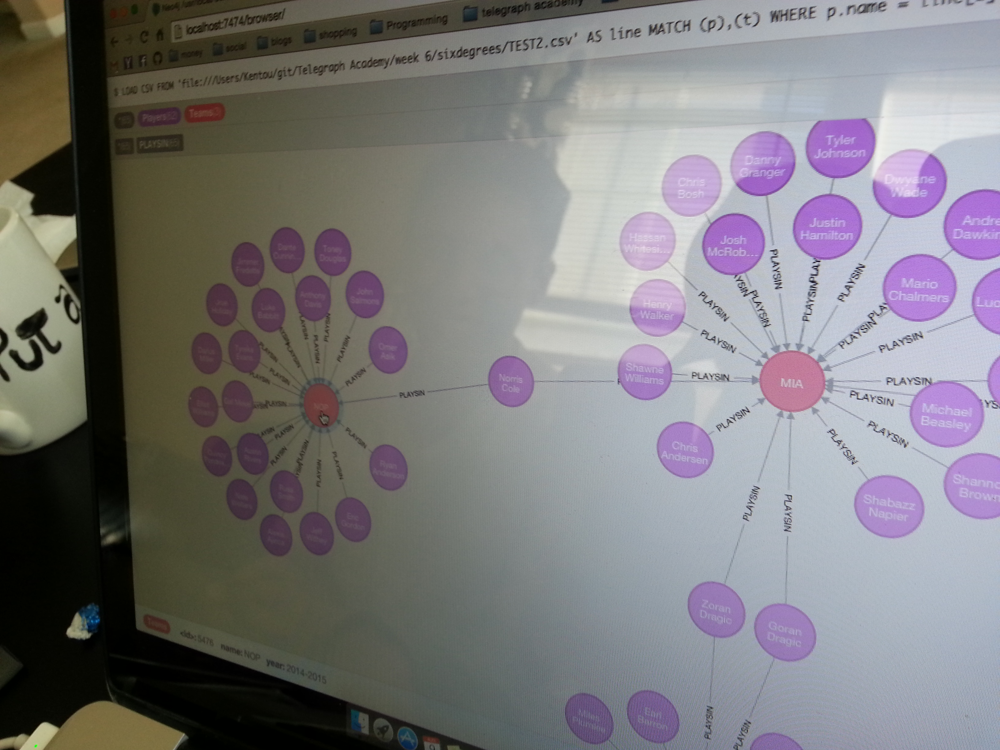
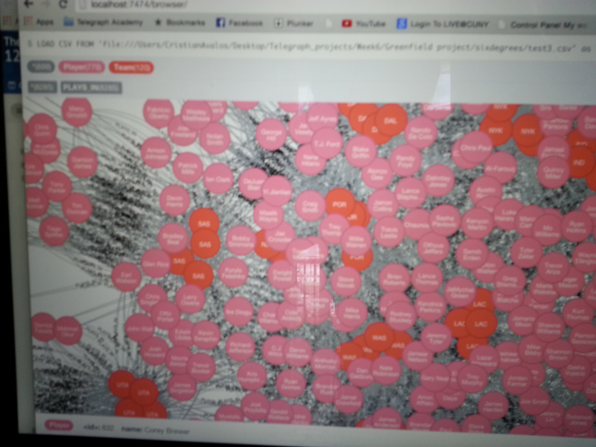

try neo4j
This post is part 1 in a 4 part series. Read the other posts:
Part 1 | Part 2 - Query Neo4j | Part 3 - Collisions | Part 4 - Node Neo4j | Repo | Site
Neo4J is a graph database and it specializes in showing relationships between each data nodes. It can be a bit intimidating to learn and make a project with a new database within a week, but that's exactly what we did at Telegraph Academy this week. We discussed mapping the pathways between players and stumbled on The Bacon Oracle and other sites that set out to mapping relationships just had we had done. We also learned about Neo4j, and found that it's built-in "shortest path" query would do exactly what we wanted, so we set out to learn the database.
You can checkout the final product of our one week of work here at six-dribbles! If you click on the about page, you can see some beautiful neo4j-d3 generated moving graphs. In part 2 I will teach you how to pull some of those images from a neo4j browser, using our dataset, but first, let's get you set up!
Go to neo4j.com's built in browser, or you can install the program and use the console on your localhost. You will need to have java version 1.7 installed on your computer and this may be challenging. This post went a long way for us. From there, send these statements into the query. The first will load up the entire dataset (FYI players names all in lowercase) from my website.
I have prepared a very simple dataset that contains just 3 points of information: The player's name, the year they played for a certain team, and the team's name. Each time a player was traded or played for two teams, both were mapped for that year.
This blog post will let you grab our initial dataset and try out some queries on the Neo4J brower. The neo4J browser has a fun GUI powered by D3 that really lets you see all the data. For example, to see each team Lebron has played on, you could ask the database and your return would be this:

Hovering on the console would show you the yearly information and confirm to you that while the nodes for each year in Cleveland and Miami looked identical, they were separate for each year, as we wanted them to be in our dataset. It's possible to create single team nodes and store more data inside the node as well.
Command 1 - this loads the file and declares the player node with a name, and the team node with a name and year.
USING PERIODIC COMMIT
LOAD CSV FROM 'http://chrissalam.com/Try-Neo4j/MasterDB.csv' as line
MERGE (p:Player {name:line[0]})
MERGE (g:Team {name:line[2], year:line[1]})
return p,g;
USING PERIODIC COMMIT lets the file come in chunks. LOAD CSV FROM 'http://chrissalam.com/Try-Neo4j/MasterDB.csv' as line MERGE (p:Player {name:line[0]}) loads the file and lets players name be defined by the first column of data. MERGE (g:Team {name:line[2], year:line[1]}) defines teams nodes. and return p, g returns the dataset to the users.
This command will take a while to process. There will be error messages and it might not parse initially but it will eventually make it over. I would run both commands with a distraction ready, it took more than 5 minutes to map the relationships on some machines, but the command runs without tying up the computer. Every person in the graph is a node. The player has it's own node, and the team has multiple nodes for every year it's been active. This database is nearly complete, we've not corrected for duplicate names so there is some short circuiting at the moment. MERGE is used here instead of create to remove duplicates.
Command 2 - this uses the CSV to create relationships between the players and the team, creating a relationship data type for the overlap in data.
USING PERIODIC COMMIT
LOAD CSV FROM 'http://chrissalam.com/Try-Neo4j/MasterDB.csv' as line
MATCH (p:Player), (t:Team)
WHERE p.name = line[0] AND t.name = line[2] AND t.year = line[1]
CREATE (p)-[r:PLAYS_IN]->(t)
return p, t
USING PERIODIC COMMIT LOAD CSV FROM 'http://chrissalam.com/Try-Neo4j/MasterDB.csv' as line MATCH (p:Player), (t:Team) This will use the CSV to look at how the plays-in relationship should be defined. WHERE p.name = line[0] AND t.name = line[2] AND t.year = line[1] CREATE (p)-[r:PLAYS_IN]->(t) and these lines create the match, PLAYS_IN and this return p, t returns it.
Here's an image from when we finally figured this out on a sample 2 season dataset. Joy!

This is all barely touching the tip of what Neo4J can do and that was by design of our group. From here, I hope to build on this database to make other relationships, such as father-son, coaching, front office staff, and add nodes for executives and coaches that have never played the game, and of course, Carrie Brownstein. Some of my group members love college basketball,some were also interested in baby mommas, and all these can be added as nodes and relationships and be called with query statements. I will break here, but I will follow up with query building in part 2, collision repair in part 3, and maybe eventually a bonus section on the CORS problems I worked on for this project using the Seraph library.
Here's a little preview...
